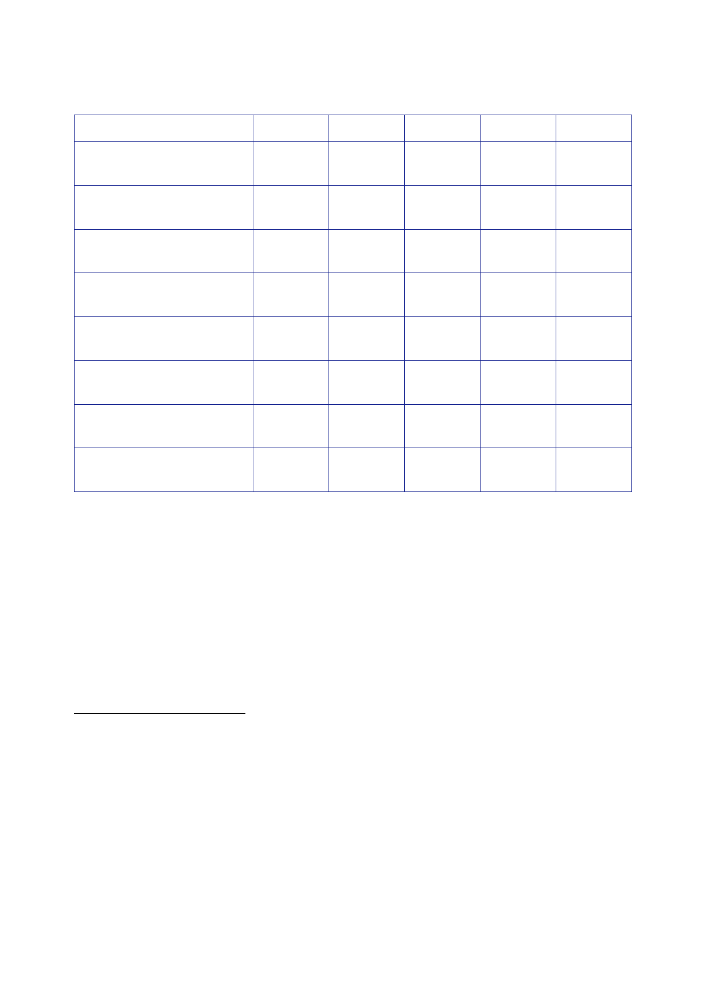

The Report
of the Iraq Inquiry
46
47 48 49 50
51 52 53
1989
2002
2003
2004
GDP at
market prices (current
65.6
n/a
n/a
36.6
GDP per
capita (current US$)47
3,850
n/a
n/a
1,391
Electricity
production
Oil
production
(million
barrels per day)49
Under‑five
mortality rate
(per 1,000
live births)50
Primary
school enrolment,
3,958
500
–
3,456
4,030
2.90 2.02
1.31 2.01
55 43 42
42
90
n/a
94
93
43 43 43
43
2009
111.7
3,725
5,700
2.39
38
92
44
n/a n/a
113/133 129/146 176/180
161.
The starting
point for all discussions of reconstruction in circumstances
comparable
to those in
Iraq between 2003 and 2009 must be that this is an area where
progress will
be
extremely difficult.
162.
Section 6.5
concludes that better planning and preparation for a
post‑Saddam
Hussein
Iraq would not necessarily have prevented the events that unfolded
in Iraq
between
2003 and 2009. It would not have been possible for the UK to
prepare for every
eventuality.
Better plans and preparation could have mitigated some of the risks
to which
46
World Bank
Open Data, www.data.worldbank.org, Iraq: GDP
at market prices (current US$).
47
World Bank
Open Data, www.data.worldbank.org, Iraq: GDP
per capita (current US$).
48
Brookings
Center for Middle East Policy, 26 July 2013, Iraq Index,
Electricity.
Figure for
2002 is a
estimated
pre‑war level.
49
US Energy
Information Administration. Iraq Crude
Oil Production by Year.
50
World Bank
Open Data, www.data.worldbank.org, Iraq:
Mortality rate, under‑5 (per 1,000). Under‑5
mortality
rate is a leading indicator of the level of child health and
overall development in countries.
51
World Bank
Open Data, www.data.worldbank.org, Iraq: Net
enrolment rate, primary, both sexes (%).
Figure for
2009 relates to 2007 survey.
52
World Bank
Open Data, www.data.worldbank.org, Iraq: Labor
force participation rate, total (% of total
population
ages 15‑64).
53
Transparency
International, Corruption
Perceptions Index (CPI). Iraq was
not included in the CPI before
2003. The
CPI draws on multiple data sources.
554